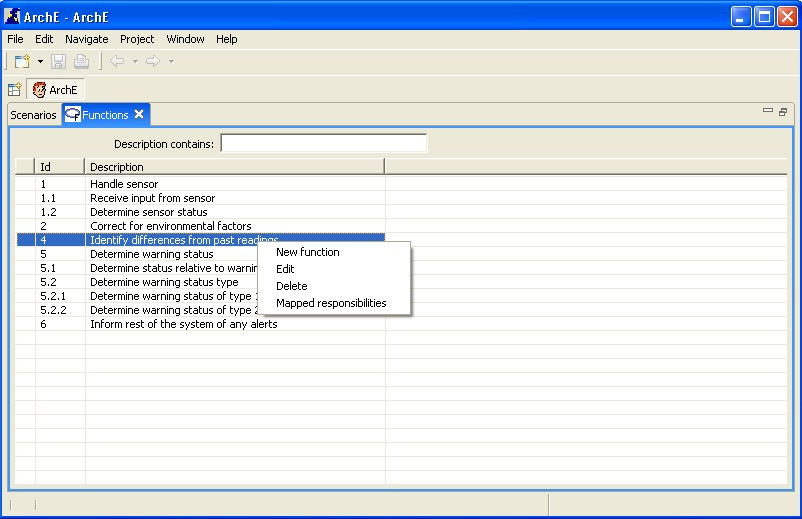
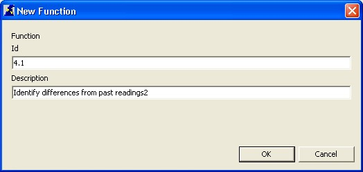
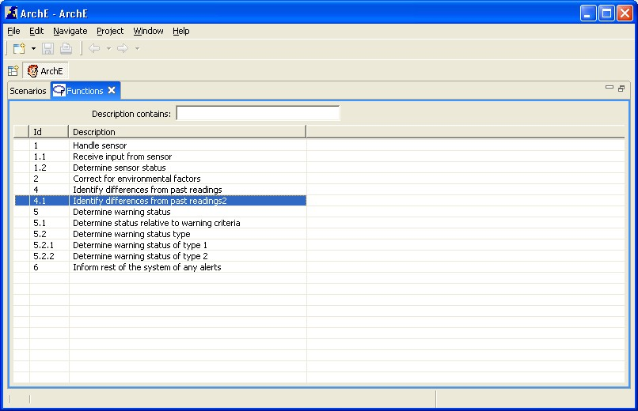
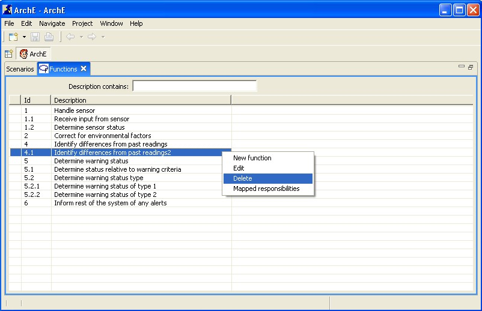
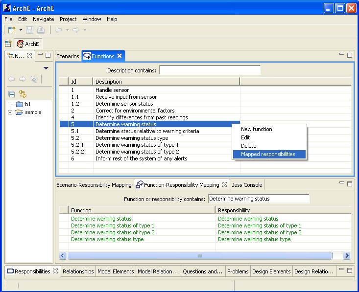

This tutorial will help you to understand the functions view and the related functionalities.
Right click in the view and select New Function from the context menu options.


A dialog box for adding a new function should open up. The user can then specify the id of the function and its description. Cancel closes this dialog box.
After specifying id and the description of the function, clicking OK sends the function to the Core and the updated fact base (with the new function) is reflected in the view (in the previously selected ordering).

Select a function in the view. Right click and select Edit from the context menu options.
A dialog box for editing a function should open up. The user can then specify the id of the function and its description. Cancel closes this dialog box.
After specifying id and the description of the function, clicking OK sends the updated function to the Core and the updated fact base (with the new function) is reflected in the view (in the previously selected ordering).
Select a function in the view. Right click and select Delete from the context menu options.

Select a function in the view. Right click and select Mapped responsibilities from the context menu options.
The Function-Responsibility Mapping View should open up with the selected function's description in the dynamic filter text box. The view will display the function-responsibility mappings that exist between functions and responsibilities (both) that contain the text of the selected function.

This tutorial briefly introduced you to all functionalities related to the ArchE Functions View.